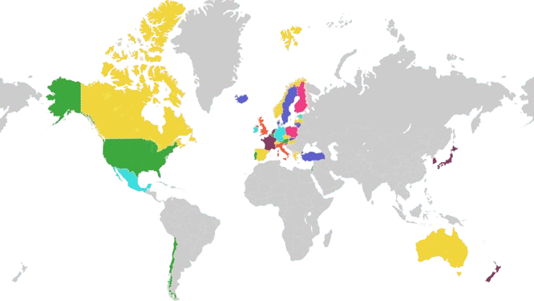

Explore the economic data of OECD countries with our interactive heatmap.
Welcome to our website, dedicated to exploring the intricate patterns of employment distribution across different industries within OECD (Organisation for Economic Co-operation and Development) countries. Our project aims to provide a comprehensive analysis of how employment is spread across various sectors and to investigate the dynamic relationship between employment distribution, GDP growth, and unemployment rates.
Our Objective
Our primary objective is to analyze the employment distribution across different industries in OECD countries and understand how this distribution correlates with key economic indicators such as GDP growth and unemployment rates. By delving into these relationships, we aim to uncover insights that can inform policy-making, economic planning, and strategic decision-making for stakeholders at various levels.
List of OECD countries